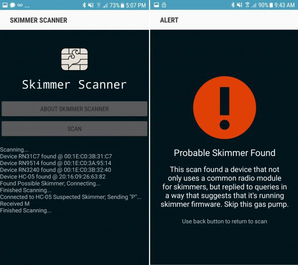

CREAN UNA APP CAPAZ DE DETECTAR SI TE QUIEREN ROBAR LA TARJETA DE CRÉDITO
Proteger nuestros datos es una batalla constante, especialmente a medida que la tecnología
continúa avanzando. Una tendencia reciente es la instalación de skimmers de tarjetas de crédito,
de manera que con un simple pedazo de hardware y 30 segundos para instalarlo, un hacker puede
robar fácilmente los números de tarjetas de crédito sin que nadie lo sepa. Ahora, la aplicación
Skimmer Scanner quiere ponerle solución.
Así funciona Skimmer Scanner
La app de código abierto, que actualmente sólo está disponible para Android, funciona buscando un módulo
Bluetooth cercano que se utiliza comúnmente en los skimmers modernos de tarjetas de crédito. El módulo se
asienta en una placa de circuito del tamaño de una mano, y se puede conectar en un lector de tarjetas de
crédito, oculto a la vista, que roba cada número de tarjeta que lee.
El uso de Bluetooth permite al infractor descargar de forma inalámbrica una lista de números de tarjetas
de cerca, sin llamar la atención.
Por muy inteligentes que sean estos skimmers, la desventaja es que, al igual que otros dispositivos Bluetooth,
se puede conocer su existencia, lo que significa que cualquiera que sepa qué buscar puede detectarlos de
antemano.

Si la app detecta un comportamiento sospechoso, verás una alerta como la de arriba. Es bastante improbable que la
aplicación de Sparkfun haga lo mismo con un dispositivo no malicioso que esté en las inmediaciones. Los desarrolladores
han trabajado en skimmers para agencias de seguridad en numerosas ocasiones y sus ingenieros tienen un firme control de
cómo se comportan los skimmers.